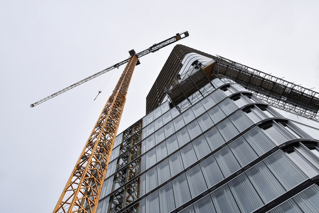

Proyectos Gestión 2022
Los proyectos que estan ejecutándose en la presente gestión en la Facultad de Derecho de Ciencias Políticas...
Ver más...Futuros Proyectos
Existe una gran cantidad de proyectos que serán ejecutados durante la gestión de nuestro señor Decano Dr. José Javier Tapia Gutiérrez
Ver más...Proyectos gestiones pasadas
En las últimas gestiones la UDI vino desarrolando varias obras en beneficio de los estudiantes, siendo las más relevantes:
Ver más...